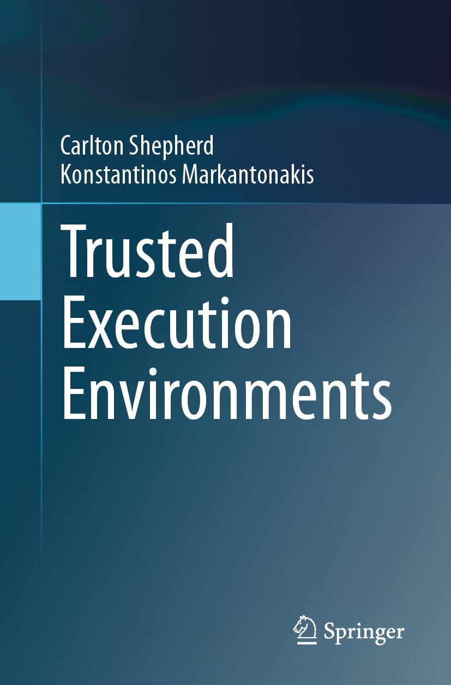

Carlton Shepherd
I am a Lecturer (~Assistant Professor) in Computer Science at Newcastle University, United Kingdom, based within the School of Computing. Prior to this, I was a Senior Research Scientist at the Information Security Group (ISG) at Royal Holloway, University of London.
I was previously at Atom Bank, the UK's first mobile bank; and at OneSpan, a NASDAQ-listed financial technology vendor, based at their Innovation Centre in Cambridge, working on the design and implementation of privacy-enhancing technologies.
My expertise centres broadly around mobile security, trusted execution environments, sensor data analysis, and side-channel analysis.
If you are interested in pursuing a project, Ph.D. etc. on the above topics, then please reach out at carlton.shepherd@ncl.ac.uk.
I hold a Ph.D. from Royal Holloway, University of London, and a B.Sc. in Computer Science from Newcastle University.
My technical publications can be found on my Publications page or on Google Scholar.
TEE Book
I'm pleased announce the release of our book, Trusted Execution Environments, published by Springer. We take a holistic view of TEEs, looking at operating system-level controls, containers and secure elements, those based on the Trusted Platform Module (TPM), and modern technologies such as Arm TrustZone, AMD SEV, and Intel SGX and TDX. Available from various retailers, including:
News
- 📌 New: I've joined the Editorial Board of Scientific Reports (Nature).
- 📌 New: I'll be serving on the Programme Committee of IFIP SEC 2026.
- 📌 New: New paper on control-flow attestation in Computers & Security. We present the first comprehensive look at using control-flow information for building trust in a target platform. You can read the paper here.
- I have a new Python package on multi-set hashing, pymsh, which implements the schemes by Clarke et al. (Asiacrypt '03).
- I'll be serving on the Programme Committee of IFIP SEC 2025.
- I've been awarded Fellowship (FHEA) status from the Higher Education Academy in recognition of high-quality teaching and support for student experience in higher education.
- At Newcastle, I am a co-investigator of one of NCSC's Academic Centres of Excellence in Cyber Security Research (ACE-CSR), a part of GCHQ, recognising internationally leading cyber security research.
- Our project, Chameleon, has been funded by EPSRC (~£1m). Here, we're tying CPU execution to environmental attributes, developing methods to prevent physical attacks that 'brick' the device when it's (physically) perturbed post-deployment.
- Our work on new firmware-level side-channel attacks on Android devices has been published in IEEE Transactions on Dependable and Secure Computing. We show that methods for sensor measurement distribution to multiple applications can expose some quite nasty attacks which are difficult to rectify. Namely, we show how attackers can create covert channels that completely bypass the Android permissions system, as well as identifying types of sensor-enabled applications.
Our work on recognising black-box functions using hardware performance counters (HPCs) was accepted to IEEE Transactions on Computers. We show that HPCs on mainstream processors can be used as a side-channel for vulnerability detection (using OpenSSL as a use case), interrogating trusted execution environments (using OP-TEE and ARM TrustZone), and general function fingerprinting with high accuracy. The paper can be read here.
We comprehensively show that combining modalities, e.g. L1 cache hits, TLB misses, branch mis-predictions and more, is far more powerful than using individual ones explored up to this point. Personally, it's reasonable to expect that multi-modal micro-architectural attacks will be a source of major security problems; far more than, say, Spectre-style speculative execution or cache attacks alone.
- In January 2023, I will leave Royal Holloway and join Newcastle University as a Lecturer in Computer Science.
Contact
I can be found on X/Twitter (@carltonshep), LinkedIn, and by email at carlton.shepherd@ncl.ac.uk.
Service
Programme Committee member for IFIP SEC 2026, IFIP SEC 2025, IFIP SEC 2024 and ACM TAS 2024.
I am also a regularly invited reviewer for many journals, including:
- IEEE Transactions on Information Forensics and Security (TIFS)
- IEEE Transactions on Dependable and Secure Computing (TDSC)
- IEEE Transactions on Computers (TC)
- IEEE Transactions on Cybernetics
- ACM Transactions on Intelligent Systems and Technology (TIST)
- IEEE Internet of Things Journal
- IEEE Systems Journal
- Computers & Security, Elsevier
- Journal of Cryptographic Engineering, Springer
- EURASIP Journal on Wireless Communications and Networking, Springer
- Journal of Systems and Software, Elsevier
Grants
- Principal investigator (PI): CyberShip: A Portable Cyber Security Training Programme for Underserved Communities in the North East, InnovateUK/CyberLocal. (Project total: c.£45,000). (2025-2026)
- Co-investigator (Co-I): Chameleon: Dynamic Device-Unique Confidentiality and Fingerprinting, EPSRC (EP/Y030168/1). Project total: £783,319 (c.£250k, Newcastle).
- We are developing a new security-enhanced CPU platform that binds functional units to the device's environment. This project is in collaboration with colleagues from the University of Essex and University of Manchester, with partners from aerospace and security. (2024-2027)
- Principal investigator (PI): Tensorcrypt: Democritising Encrypted Data Analytics, Innovate UK, UKRI. Total: £73,740 (Apr. '21 - Feb. '22. Phase 1: £13,951, Phase 2: £59,889).
- This project developed a new, proof-of-concept privacy-preserving machine learning platform to allow organisations to jointly analyse data in sensitive domains (e.g. transaction fraud). Performed code reviews and developed in line with best practices. It was conducted through Innovate UK's CyberASAP programme, which funds promising academic ideas for potential commercialisation through industrial/market engagement activities (Phase 1) and the development of a proof-of-concept (Phase 2). Prof. Konstantinos Markantonakis, also of Royal Holloway, University of London, is Co-I.